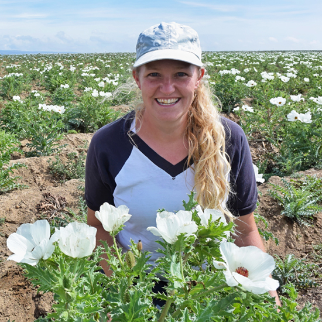
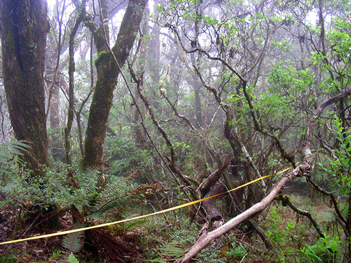
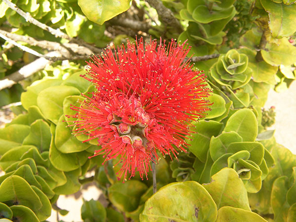

How do plant traits shift across ontogeny and influence tolerance to abiotic and biotic stress?
Plant functional ecology · Hawaiʻi
Kasey E. Barton
Professor of Botany at the University of Hawaiʻi at Mānoa, exploring how island plants grow, adapt, and persist in a changing world.

The Barton Lab
How do plants change as they grow?
We investigate plant functional ecology through experimental, natural, and synthetic approaches. Working primarily across the Hawaiian Islands, our research connects plant evolutionary ecology with the conservation of island biodiversity.
Are island plants fundamentally different from continental plants—and how does that shape their interactions?
Research focus
Stress, survival, and the remarkable lives of plants.
Environmental stress
Drought, salinity, fire, and heat—and the traits that help plants tolerate them.
Biotic interactions
Herbivory, competition, and how species interactions change through plant development.
Island biodiversity
The extraordinary native flora of Hawaiʻi and what island plants reveal about evolution.
From the field
Botany in place


Curiouser and curiouser.Lewis Carroll Top